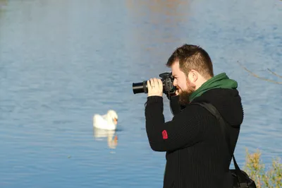
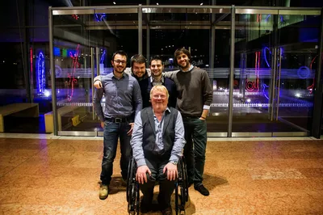
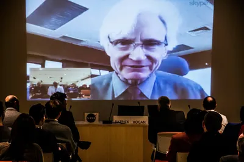
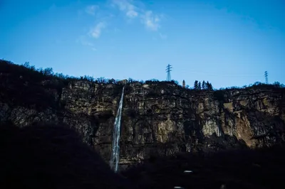

When I Ended Up in Italy Because of Mistaken Identity
This is the story of how a typo, or near enough to one, sent me to the northern Italian mountains on a free trip. It is also the story of how I was told of a sister I never knew I had (mainly because I don't have a sister).
Quick jargon guide
- HDR: high dynamic range - blending several exposures of the same scene so bright skies and dark shadows both keep their detail. Extremely fashionable among hobbyist photographers in 2013, me included.
- GIS: geographic information systems - software for capturing, analysing, and mapping location data. Think digital maps with layers of meaning on top.

Back in 2013, I had just moved to a small town outside Glasgow, Scotland, called Erskine, while I worked for Hewlett Packard (HP) Enterprise Services.

I was using my website mainly as a gallery for my photography. The email address on the contact page was, and still is, ken@kenreid.co.uk. One afternoon a message arrived in my inbox asking if I would be interested in doing a professional shoot of Dr Cameron Easton, who at the time was being featured in a National Geographic piece. They wanted a photograph for the article.
I read the email twice. I was an amateur with a Canon and an obsession with HDR, not a working pro, but they had found me through the gallery and they sounded serious, so I said yes, thinking this was a wonderful opportunity and a chance I could not pass up.
I took the bus out to Glasgow, met Cameron and the chap who contacted me outside of the BBC building, did the shots, went home and spent the evening editing. They were happy with what I sent over. I told them not to worry about paying me, that I had enjoyed the work and it had been an experience I would not have had otherwise. Plus, I didn't want to rock the boat with my employer, HP, and photography was really just a hobby for me.

A short while later the same contact wrote back. They had loved working with me. They asked if I would be interested in coming out to Trento, up in the northern Italian mountains, to cover a week-long event for SMESpire, a European project bringing together GIS specialists and assorted technical people. Flights, accommodation and food covered.
I stared at the screen for a while. I had never been to Italy and I had never been paid to photograph anything, never mind been flown out to do it. I said yes and again rejected the offer of payment, so I didn't upset anything with my employer. I booked a week vacation from work, then they had me in touch with an agent to sort out flights etc. I was going to Italy!

Somewhere in the back-and-forth that followed, my contact signed off an email with a friendly aside:
Tell your sister I said hi!
I read that, frowned, scrolled up the thread, scrolled back down, and replied that I was sorry but I did not have a sister.
He came back puzzled.
Susanna Reid? From the BBC?
I do not know, and I'm definitely not related to Susanna Reid. After a short, increasingly confused exchange, the truth came out: they had meant to contact ken@kenreidphotography.com, while my address is ken@kenreid.co.uk.
Somebody had typed the address from memory, or off a card, and I got the email instead.

Then, the biggest surprise of this whole thing (at least to me) was that after finding out who I am (and who I am not), they were good about it. They said they were happy with the photographs I had already delivered, the Italy offer still stood, and we may as well carry on. So I went.
Trento was beautiful. The event was a mix of presentations, fieldwork and dinners with people who knew far more about geographic information systems than I did, and who were generous about my evident outsider status. I shot the talks, the breakouts, the social parts, the landscape when I had an hour spare, and I came home with a hard drive full of work I was proud of and a week of food (and wine) I still think about.
I never met the other Ken Reid, and we did not stay in touch with the client after Italy either, but it was a great outcome to receiving an email that was effectively a typo.
